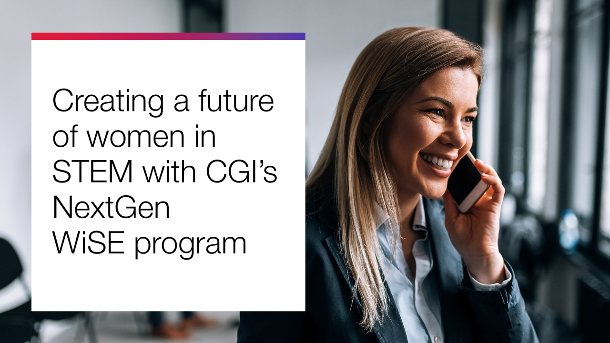

Work Term 1 Report
May - August 2024
Information about the Employer
CGI is a Canadian multinational information technology consulting and software development company headquartered in Montreal, Quebec.
Founded in 1976, CGI is one of the largest IT and business consulting services firms in the world, with over 91,000 employees across 40+ countries.
CGI specializes in several areas, such as:
- Business consulting
- Systems integration
- Application development
- IT outsourcing services
CGI is known for their insights-driven and outcomes-based approach, helping clients accelerate returns on their investments and achieve their business goals.
Fun Fact: CGI has received several awards, including Canada's Top Employer for Young People, Best Workplaces for Women Canada and being named as one of Canada's Best Employer for Diversity.
Goals
Improve Technical Reading
I aimed to enhance my comprehension of technical documentation. I improved my understanding and technical vocabulary by regularly reading various technical documents and practicing active reading strategies.
For example, I needed to learn several new languages and frameworks for my tasks, such as Angular, so I thoroughly read the documentation to understand its usage.

Develop Technological Literacy
Another goal was to boost my technological literacy. I dedicated time to learning new technologies and applying these skills to real-life problems. Since starting, I've learned a variety of different technologies.
For example, one of the first tasks I completed was reformatting Rundeck Access Control Lists (ACLs) using YAML, both of which were new to me.
Strengthen Teamwork Skills
I aimed to enhance my teamwork skills. By participating in team projects and practicing effective communication, I improved my ability to collaborate, resolve conflicts, and contribute positively to team environments.
For example, we used Agile with daily stand-ups and JIRA to foster collaboration, stay organized, and improve communication. Regular sprint planning helped us adapt and meet our project goals.
Overall Reflection
Reflecting on my goals, I have made progress on all of them. However, I'm still improving my problem-solving skills and global understanding. Setting these goals has taught me valuable skills that will benefit me in the future.
For example, I have improved my self-teaching by learning new programming languages independently and enhanced my communication skills through team meetings and presentations.
Job Description
Overview
As a Software Developer at CGI, I was responsible for a variety of tasks, including assisting the UX team with an upgrade that involved transitioning from Angular to React, and handling bug fixes and changes required due to brand design updates. I initially started in the Digital Platform team, where I provided maintenance, user access support, and worked on tasks involving debugging and troubleshooting. Later, I transitioned to the Design team, contributing to the CGI Experience Design System. This role required me to learn several new technologies, including React, TypeScript, Figma, and Angular. Since this is an 8-month co-op, these responsibilities reflect my first 4 months. Currently, I am working on a new project to enhance the file management system at CGI and developing a Design System package (DSP). In this project, I am gaining new knowledge in areas such as design tokens and JSON.
Unique Aspects of the Job
One unique aspect of this job was that it was part of CGI's Women in STEM Excel (WiSE) co-op program. This program offered numerous learning opportunities, including workshops on delivering elevator pitches, obtaining the ScaledAgile SAFe for Teams Certification, and being matched with a mentor. Additionally, I had the chance to participate in an AI Hackathon in mid-August.

Skills Required and Learning Experience
The job required a diverse set of skills, including proficiency in various programming languages, libraries, and frameworks, as well as essential soft skills like communication, problem-solving, and teamwork. I developed these skills both on the job and through various training sessions and workshops provided by CGI. My Software Development classes were particularly beneficial in understanding the business and project management aspects of the role, such as Agile and Scrum methodologies, which are commonly used in professional settings like CGI. The hands-on experience and continuous learning environment significantly contributed to my professional growth.
Conclusions
In conclusion, my work term at CGI has been an invaluable experience that has significantly contributed to my professional and personal growth. I was able to learn and strengthen my knowledge about different technologies, such as Angular, React, TypeScript, HTML & SCSS, JSON, and YAML. I was also excited to develop my skills not only in coding and software development but also in the business aspects and UX design, including using Figma.
This opportunity allowed me to enhance my design thinking and gain a better understanding of the industry. I was fortunate to meet and work with people who provided support and mentorship throughout my journey. Overall, this was a great first work term that has thoroughly prepared me for future challenges and opportunities in this field.
Acknowledgments
I would like to begin by expressing my sincere gratitude to everyone I had the pleasure of working with across all my teams, as well as to everyone else who supported me throughout this work term.
I would also like to acknowledge Laura Gatto, Anne-Marie Zawadzki, and Kate McRoberts, my co-op coordinators at the University of Guelph, for their invaluable feedback, assistance with my resume, and guidance. I am very grateful for all the support and encouragement I have received.